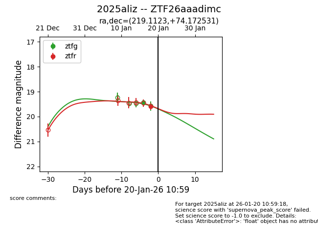
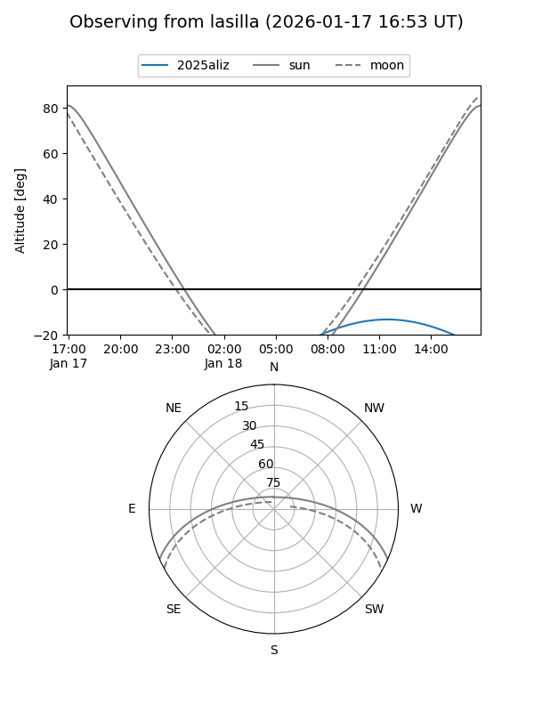
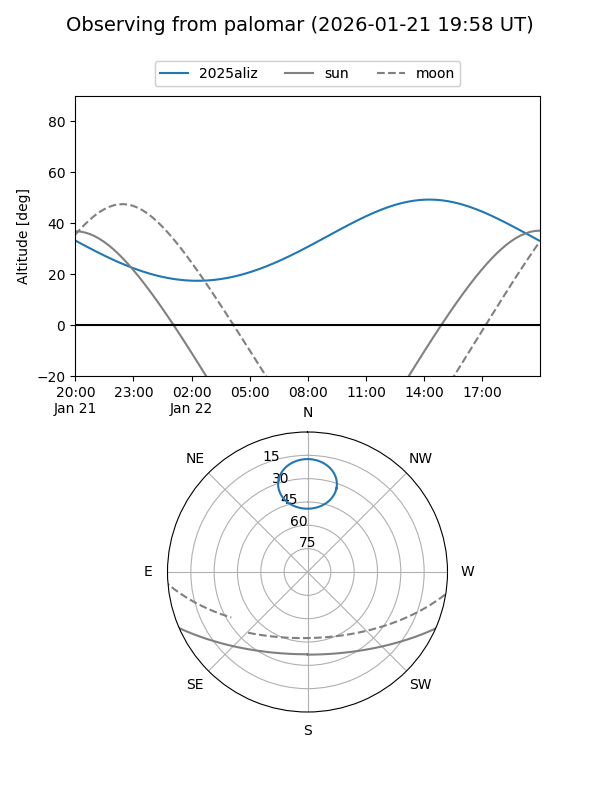
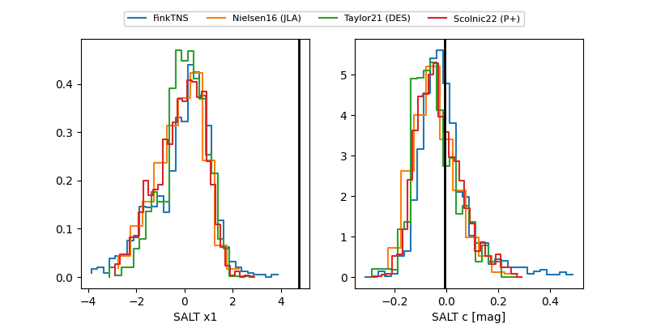

2025aliz
Target 2025aliz at 2026-01-18 10:45
Aliases and brokers:
FINK: link
Lasair: link
ALeRCE: link
TNS: link
YSE: link
alt names
ZTF26aaadimc (ztf,fink_ztf)
2025aliz (tns,yse)
Coordinates:
equatorial (ra, dec) = 219.1123,+74.17253
equatorial (HMS+DMS) = 14:36:26.96,+74:10:21.11
galactic (l, b) = (113.7300,+41.02550)
Flags:
Photometry:
last ztfg=19.58
2 ztfg detections
Lightcurve

Visibility


Additional plots
